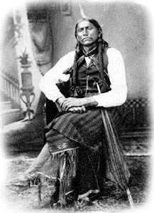

|  |
| Can you imagine having spent your
whole life as an Indian and then be forced to change your life so you and
your people would be safe? Well this happened to many Indians and their
people having to change their ways to white man’s ways. I am going
to tell you how a man named Quanah Parker had to do this very thing. |
| At the age of nine Comanches captured
Cynthia Ann Parker and her brother, John. Although Cynthia’s brother was
ransomed back home, Cynthia had to stayed with the tribe. She even married
a warrior, named Peta Nocona and they had children. The most noticed of their
children was Quanah, which’s means “smell,” “odor,” or “fragrant.” Quanah
was born around 1845. |
| On December 18, 1860, Texas Rangers,
ordered by Lawrence Sullivan Ross, raided the village and took Cynthia and
her daughter, Prairie Flower, back to the white man’s village. Cynthia and
her child had to live with the Parker family although she tried many times
to return back to her Indian family so she could be back with her two sons
Quanah and Pecos. She got so depressed from being separated from her Indian
family that she starved herself to death just shortly after Prairie Flower,
her daughter, had died. Cynthia Ann Parker died in Anderson County, Texas
in the year 1860. |
| Quanah stayed with the tribe after
the raid had taken his mother and sister to live with an American family.
With his old tribe defeated he joined a new tribe called the Quhadi Comanches. |
| By the 1860’s the Quhadis (“Antelopes”)
were known, at that time, as the most war of the Comanche bands. Among them
Quanah became a great horseman and proved himself to be an able leader. These
characteristics were in demand when, as a result of their not signing the
Medicine Lodge Treaty or move to a reservation provided by the treaty, the
Quhadis became fugitives on the plains. They continued to hunt buffalo in
their traditional way while still raiding settlements. For the next seven
years the Quhadis held the Texas plains without being touched. Attempts of
the Fourth United States Calvary under Col. Ranald S. Mackenzie to find the
Indians in 1871 and 1872 failed. The army was unable to find the Indians
and the troopers lost a number of horses on October 9, 1871, when Quanah
and his followers raided their campsite and stole their horses. Mackenzie
gave up the search in mid-1872. |
| The Quhadis, under the guidance
of Quanah Parker and a medicine man named Isa-tai, had to form an alliance
wanting to get the hunters off the plains because they kept killing the buffalos,
the Indian’s chief source of substance, for no reason. Just as a sport. |
| On the morning of June 27, 1874,
this alliance of some 700 warriors, containing Cheyennes, Arapahoes, Kiowas,
and Comanches, attacked the twenty-eight hunters and one woman housed at
Adobe Walls. The Indians thought the raid was a disaster; their planned surprise
was messed up, the hunters great weapons made them unable to fend off repeated
attacks. In the end the hunters suffered only one casualty, while the Indians
had fifteen dead and several wounded, including Quanah. So the Indians
retreated and the alliance fell apart. |
| Under the pressure of the army
and suffering from hunger, the Quhadis surrendered their independence and
moved to a reservation in southwestern Oklahoma. While most Quhadis, along
with most Indians, found it hard or even impossible to get used to reservation
life, Quanah made the transformation with such ease. In fact the federal
agents even named Quanah Parker chief of the reservation because they were
trying to find a way to unite all of the different bands of the Comanches. |
| Quanah gave his people good leadership.
He worked to promote self-reliance. He supported the construction of schools
and wanted the Indian youths to learn the way of the white man. He became
a successful and quite wealthy stock raiser. Because of this he was probably
the richest Indian in America at that time. |
| He supported agreements with white
ranchers letting them lease grazing lands within the Comanche reservation.
He wanted his followers to build houses like the white peoples and plant
crops like them as well. He became a judge on the tribal court. Quanah considered
Theodore Roosevelt as one of his friends. Magazine reporters, on subjects
such as political issues as well as social issues, often interviewed Quanah.
He didn’t make his followers give up all of their traditions. He refused
to cut off his long braids; he rejected Christianity even though one of his
sons from his seven wives was a Methodist minister. Quanah was a member of
the Peyote Eating native American Church. Peyote is a drug that was thought
back then for the Indians to see into the future. |
| By 1901 the federal government
voted to break up the Kiowa-Comanche reservation. For the rest of his life
Quanah worked his ranch, continued to find ties with the white men, and kept
his position as the most powerful person among the now separated Comanches.
In 1902, his people named him deputy sheriff of Lawton, Oklahoma. |
| On February 11, 1911, while visiting
the Cheyenne reservation, Quanah became ill and no one could find what was
wrong with him. After returning home on February 23, he died. At his funeral
he was dressed in Comanche clothing and was buried with a large sum of money.
Four years later robbers took the money and his remains along with those
of his mother were reburied at Polk Oak Mission Cemetery. But in 1957 an
expansion of a missile base forced once again for the reburial of Quanah
and Cynthia Ann Parker to Fort Sill, Oklahoma. |
| Quanah Parker was truly a man of
two worlds and will always be thought of just that. His people were indeed
lucky to have such a great leader that cared for his followers and did whatever
he thought was the right thing for them. Quanah Parker, son of Peta Nocona
and Cynthia Ann Parker, was a great leader. He was a hero to his people. |
| Jill Manuel Rossville Grade School 2002 Plains Indians Project Bibliography Page |